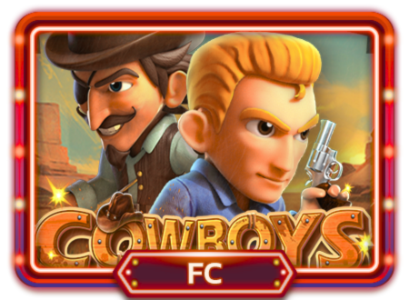
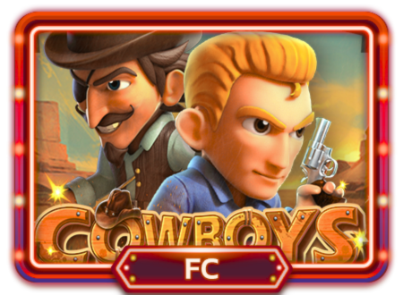

Online Slots at Panalobet: A World of Excitement and Big Wins
Welcome to Panalobet official website, which is dedicated to the online slot game. It offers Slot machines of a broad and exciting list to meet all tastes and preferences and regardless of whether you have played online slots before or not.
We have every kind of slot game ranging from the normal slots, the video slots, progressive jackpot Slots, to even the enticing three dimensional slot games, and this means that if you walk into the casino you have numerous opportunities in record time to get rich and have fun at the same time.
Discover Our Extensive Range of Slot Games

 


Classic Slots
Traditional slots are the original products that define the online slot games. These being simple games, they use icons like bars, cherries and sevens and these commonly come with three wheels. The features distinguishing the classic slots option are minimalism of the design and very easy-to-understand rules, making the option perfect for newbies. These slots have fewer paylines and simple interfaces that can remind about the traditional slots of early years of the slots’ history. They are likely to happen often due to the low volatility so the players can enjoy a frequent and satisfying gaming session.
Video Slots
Video slots are similar to the normal slots, but they have better graphics, animations and sound appeals. They can include five or more reels and the matters can be historical, mythological or simply fantastic. Video slots have multiple pay lines, extra features, and great features that make the games more interesting to play. This may include the bonus spin, multiple offers and the mini-games which offer additional fun and chances of making a decent stake.
Progressive Slots
Progressive slots are created for the possibility of winning enormous quantities of money, which are called jackpots. These games are related across a number of casinos or machines and there is an ever accumulating, often exploding jackpot which rises with each spin till the right player makes the scoop. Progressive slots are available in different types, namely; the traditional, video, and the multiple line slots. This is true because compared to other slots, progressive slots often allow players to win huge amounts of money. Despite the fact that they may be more volatile, a person has the opportunity to perform rather impactful actions and receive a sizable reward at some point.
Megaways Slots
Megaways slots has evolved the standard slot type of game through a feature of a variable number of pay line chaining. In Megaways slots, there are no paylines but there are rows and generally the number of rows is up to thousands of ways to win on every spin. This makes the whole concept of playing slots to be more exciting and no end seems to be in sight. Specifically, Megaways slots shall be noticed as being specifically suitable for the mobile audience because of the engaging simple mechanics as well as the high playability level.
Branded Slots
Branded slots are obtained by incorporating favourite movies, shows, and other products into the sphere of online games. These slots involve characters, symbols and themes that are associated with certain franchises; this gives the viewers a novel way of interacting with their beloved content. Branded slots contain not only the unusual but also bonus features as well as the storyline that is connected with the movie or any other media source.experience.
Mobile Slots
Mobile slots are developed to fit smartphones and tablet platforms hence you can play any game of your preference from your phone. These games are most suitable when played on mobile devices due to the small screen and the inherent use of the touch screen controls. Most mobile slots are available with the same features and the same chances to win bonuses as the corresponding stationary versions, so you will be able to play and win as interesting as if it is situated in front of a computer.
Vast Selection of Games
Panalobet currently has more than a thousand slots available to play, and it is rare to find someone who does not like any slot type that it provides. If you like traditional interfaces, and modern 3D interfaces, busy video slots, the opportunity to win a progressive jackpot, or exciting Megaways, there are numerous proposals where you will not get bored. In this way our diversity allows you to find something new and interesting every time you visit the library.
High-Quality Graphics and Gameplay
These slots have better graphics and animations that make people enjoy and be fully involved in the game to the end. Starting with the representation of cabinet and screen in video slots to the details of branded slots, the product was regarded as being captivating. Control is brilliant and the graphics are smooth making the game play a lot more exciting and every round counts.
Generous Bonuses and Promotions
At Panalobet, players will be given the best bonuses and promotions to encourage the players to keep on playing with our site. It is open for your consideration a large number of bonuses and promotions, starting from the Welcome bonus with free spins and ending with special offers and rewards for loyal customers. That can be done on the promotions page – check the bonuses that we have for you, and start taking advantage of them.
User-Friendly Platform
It is easy to navigate through the various icons and tabs and this will allow you to play your preferred slots with a lot of ease. In terms of interface, it does not matter if you are using a pc or your smartphone because, in both cases, you will get the same professional experience when else using Panalobet. It is important for users to note that our website is compatible to play on both devices and in equal measure, it is fun to play on any of the two.
Secure and Fair Gaming
The company ensures to give its clients the very best in security and fairness when it comes to online casinos. To ensure that your personal and monetary data is safe we employ an extremely secure SSL encryption technology. Our games undergo random tests to ensure they are random and fair, so you can play comfortably, with no doubt in the result’s legitimacy.
Exceptional Customer Support
In case of any extra questions or issues, our friendly team of support is always available to assist you at any one, two or mid of the night. Whether you are registering an account, new to the site and not certain how the games work or experiencing technical difficulties, the team will assist you to create the best gaming time. In case of any issue you may engage us through live chat, by sending an email or a phone call.
How to Get Started with Panalobet Slots
Panalobet online slots are easy to access, and one can quickly start playing as soon as they have registered. Follow these simple steps to begin your exciting gaming journey:
1. Register an Account: Check our website and then go to the ‘Sign Up’ button. You have to provide your telephone number, your e- mail address, and choose the username to create the account. Major emphasis should be placed on the details that are to be entered so as not to encounter some few difficulties during the process of registration.
2. Verify Your Account: After you have completed the form you will receive an email from us to create an account with us. This implies that it would require him/her to click on the link sent to him/her to stand the account and complete the registration.
3. Make a Deposit: The cashier section of the site offers you a selection of safe payment methods to use for credit with the site. We use and accept more than one currency on our site; withdrawals and deposits are also fast and trouble-free.
4. Explore Our Games: Once you have registered your account and funded it you can check out the wide range of slots games. Filters and the search bar are used to either locate the desired games or to find something new.
5. Claim Your Welcome Bonus: Do not miss out on your welcome bonus that can enable you to add up to your first deposit for practically more fun gambling. For more details on the promotions that we have running currently, please feel free to visit and navigate through our promotions page.
6. Start Playing: Choose a slot game to play and begin the reels spinning. Get captivated with the nice graphics, bonuses, and play and get an opportunity to win with every spin you make.
Understand the Game Rules
Similar to other games, it is advisable, before you are actually into playing a particular game, to carefully understand and analyse the rules of that game. One has to understand such aspects as paylines, bonus features, and payout rounds in order to make the correct decision and get more chances for winning.
Set a Budget
It’s always a good idea to put down a budget on the gaming sessions you wish to have, and follow it to the latter. This way, you can control your expenditures and make sure to gamble right. Choose what is more or less money you are ready to spend and do not overpay more.
Take Advantage of Bonuses
It is recommended to optimise the usage of bonuses and promotions proposed in Panalobet. Such bonuses as free spins, deposit bonuses and others can enrich your experience and give several more attempts to win. You should frequently check our promotions page and get familiar with the bonuses which are currently available.
Play for Fun
The important thing to know is that slot games are intended for fun. For anyone to engage in gambling it’s crucial to do so for fun and not necessarily because of the chance of winning. Stay positive and remember it is just a game and be as competitive as possible.
Practice with Free Games
New to slot gaming or playing a new game, you should consider playing the demo games available on our site. It gives you a platform that helps you to be conversant with the game, learn all the functions it has to offer and how it works before risking your real money.